Theme Installation
1. After theme purchase, you need to download it. Simply log into your account, go to your downloads and locate your theme. Click on the download button and select the “Installable WordPress file only”. This will download the zip file for your theme. Make sure you select the “Installable WordPress file only” option. This is theme correct zip file. If you will download “All files & documentation” it will download zip pack, inside you will find, theme zip file, documentation, demo data and other helpful files, in this case you will need unzip full theme pack and install theme zip.If you will install wrong file, you will get "stylesheet error" in WordPress installation, make sure that you install correct files.
2. After downloading correct files log in your WordPress and make sure that your WordPress is up to date. Then goto appearance > themes > upload theme > and upload correct files after that activate theme, by pressing "activate" button.
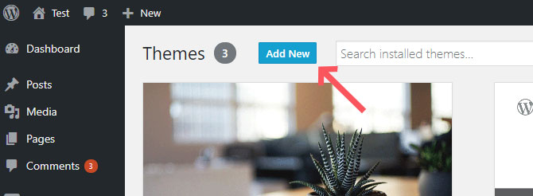3. Then you will see a message with required plugin installation, press install plugins. Select all checboxes and press install then activate plugins. Now your theme is installed correctly and all plugins installed and activated.
Plugins installation troubleshot info: If you can not install and activate all plugins at once, you need to install and activate plugins one by one, not all at once!
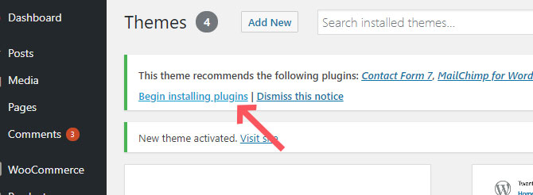4. You can also install theme via FTP. Use free software for this task - FileZilla. Download theme files zip, unzip it and upload theme folder to your server using ftp to location: wp-content > themes . Now new theme will appear on your wp admin panel > appearance > themes > activate it, and do the same actions, as we did above.
Useful topics about theme installation: https://envato.com/blog/install-themeforest-wordpress-theme/
Demo Content Import
1. After theme installation you need to import demo data to have starting point for website creation. With our themes it is very easy to do, just one clik. Goto wp admin panel > appearance > import demo data > and press the button. All your demo data will be imported, this may take several minutes.
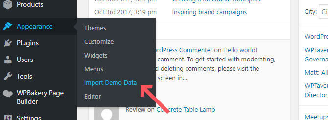2. Then you need to import revolution slider data separatelly. Download theme full zip pack from themeforest > unzip it > you will see "demo" folder > open it and inside you will see slider.zip files or files.
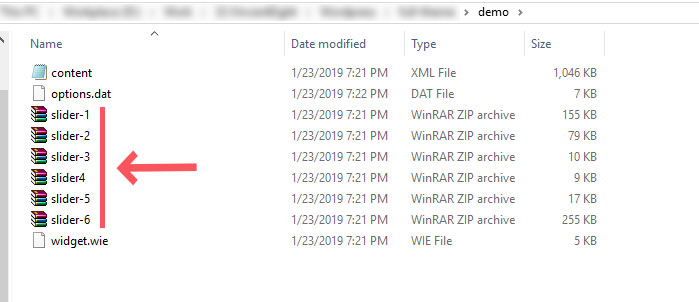3. Import that files to wp admin panel > revolutions slider >import. After doing this you will have exact copy of demo on your website.
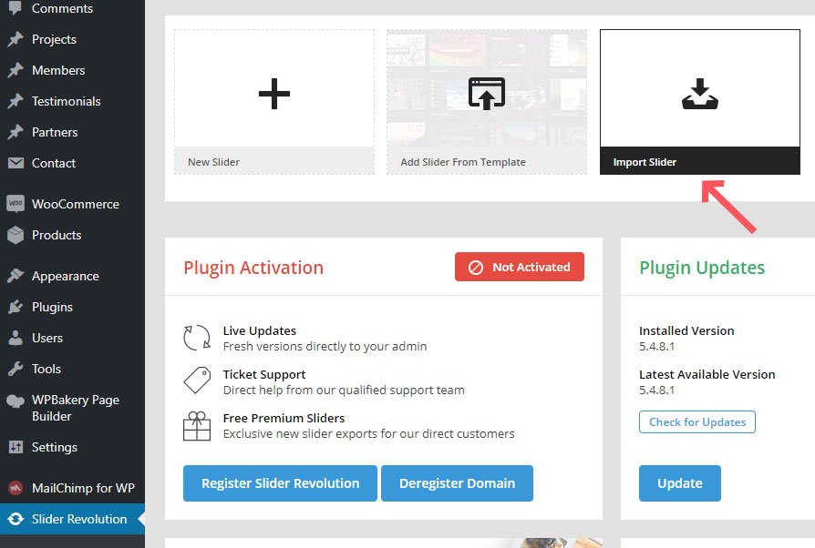Installation and Demo Import Troubleshoots
If you have issues with theme installation or with importing demo data, there can be some kind of reasons, based on your hosting or software configurations. Main reasons list:
- Your WordPress should be upto date
- Your PHP version should be compatible with your WordPress version
- Your hosting memory limit and timeout limit should be enough to install theme and import demo data
Instructions about menory limit increase. You should check your php.ini configurations at your server/hosting. Ninzio team recommends to change these options in your php.ini file:
max_input_vars (default is 1000) set to 3000 post_max_size (default is “8M”) set to 2000M upload_max_filesize (default is “2M”) set to 64M max_execution_time (default is “30”) set to 180 max_input_time (default is “-1”) set to 180 memory_limit (default is “128M”) set to 3000M
If you don’t have access to your php.ini file, ask your hosting/server provider, they should configure it for you
Configuring Front Homepage and Blog Archive Pages
By default in WordPress front page looks like blog archive page, to change it you need to goto wp admin panel > settings > readings > and you will see options to place blog page and front page. Switch to "static" page and place correct homepage and blog page that you need.
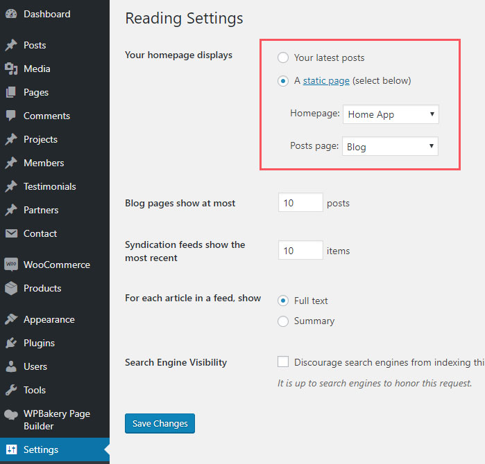Theme Customize: Header, Logo, Menu, Featured Title, Layout...
The theme includes tons of easy to use options to customize the design of your site. Most of your theme options can be found in the live WordPress theme customizer. Theme uses only native WordPress functions, os you should be familiar with the way the Customizer looks and works.
Simply navigate to Appearance > Customize to make changes to the design of your website.There you can find all options to change anything in theme, it is easy and intuitive. This is live customizer, so all changes you can see at once, without saving, then when you like result, save.
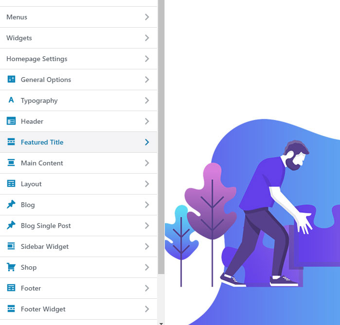Working with Headers in Customizer
1. In theme you have option to choose different menu versions for each page separatelly and for whole website as well.
2. To choose header version to exact page you need to goto page editor, and in page extended options choose your header version.
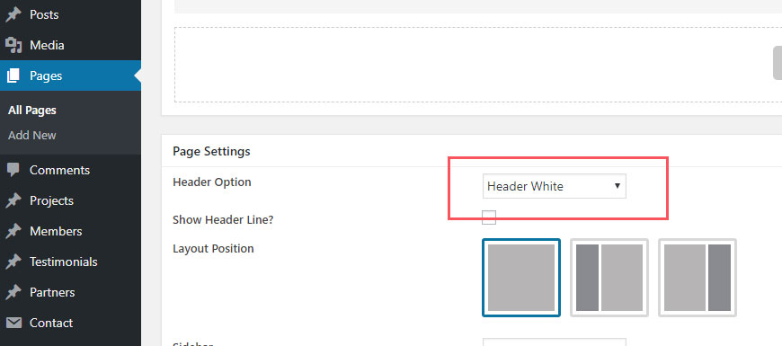3. Then to edit only that header version you need to goto theme customizer ( wp admin panel > appearance > customize ) navigate to the that page from your primary header website menu. Now in customizer you will edit only that header version > goto customizer > header >and you will see a lot of options to set.
4. If you want to edit another header version, choose another header version on page extended options, navigate to that page with enabled customizer and you will edit another version of header.
5. To set general header version to website, for pages like blog, custom post types and other, where you don't have page extended options. You need to goto customizer > general options > header site > and to choose your header version. You can also enable fixed / sticky menu from here. 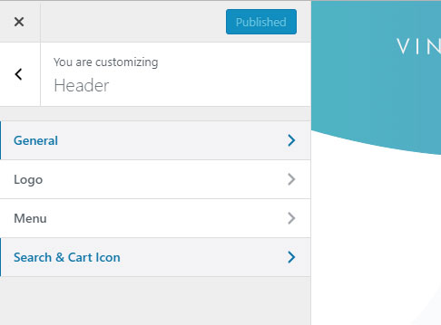
Working with colors
Theme have option to change almost all colors inside. Some elements use general accent color, some elements have it's own color choose option. There are most used placed from where you will be able to change colors in theme:
1. To change accent color in theme you need to goto wp admin panel > appearance > customize > general options > accent color
2. Some elements in theme can have it's own separate accent color that can be set from WP bakery page builder element options
3. Also some colors can be changed separatelly from admin panel. For example header links and hover effects can have own separate colors, that can be set from wp admin panel > appearance > customize > header > menu
4. Also you can see in page extended options some options to set colors for each page separately
5. If you need to change color in some place, where you can not find option to change colors, you can always use custom css styling with pointing to the element class where you want to change color. Custom css can be applied to wp admin pannel > appearance > customize > aditional css
Creating One Page Menu
1. Theme comes with one page functionality inside. To make one page created you need to goto wp admin panel > appearance > menus > and create new menu for one page, when creating menu you need to link to ID, example of link: "#features" Here you need to use # symbol.
2. Then you need to assign your menu to "One page" location. And IMPORTANT thing: your menu name should be "One Page".
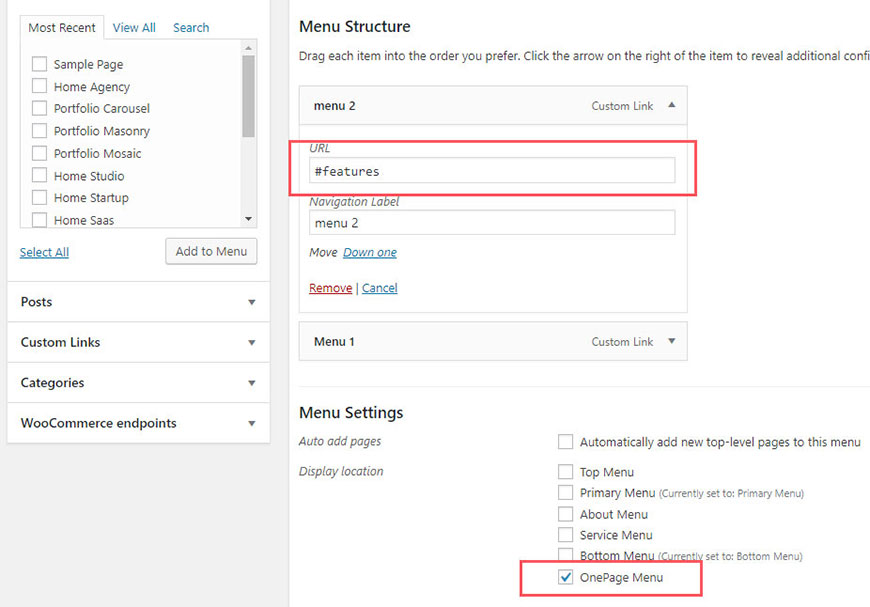3. Goto your page, where you want to have one page layout. Choose "One page template" for this page
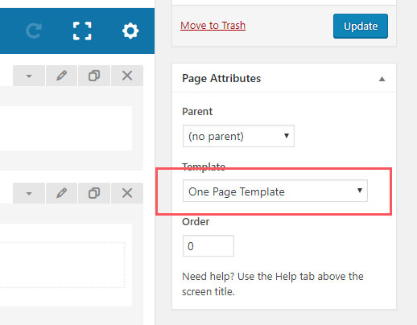4. Create row or another section with WPBakery page editor where you can set ID and set ID that you placed to your menu. Example: "features" Here you need write ID without # symbol.
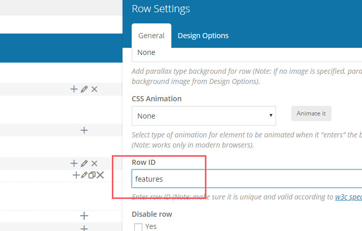Working With Widgets
To work with widgets in sidebars or in footer, you need to goto wp admin panel > widgets. There you will see areas, where you can place widgets ( in right area of the page ) and available widgets ( in left area of the page ). Simply drag and drop widget to the widget area you want, then configure widget settings, and you will see the result in your website.
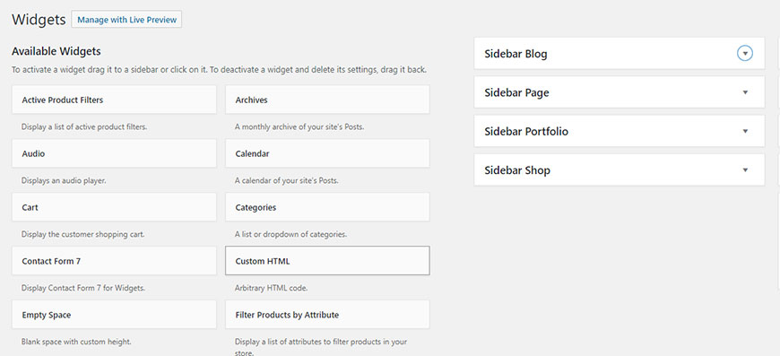Working With Pages and WPBakery Page Builder
1. You have powerful and flexible drag and drop tool WPBakery page builder to create any content you want int pages. To learn how this plugins works, you need to examine their documentation: https://kb.wpbakery.com
2. To create page you need to goto wp admin panel > pages > add new.
3. After adding page goto edit it, and you will see WPBakery page builder, switche to WPBakery page builder, there you can choose between Baclkend mode, Front-end more and Classic mode. Let's work in backend mode now. Now you can add any element you want, you can see tons of custom elements, created by us for this theme, each element have it';s own options inside, all is very intuitive and easy to customize.
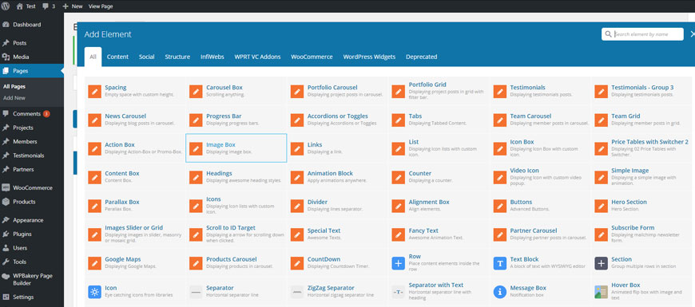4. When editing single page, under WPBakery page builder you can find page extended options area, there you will find all options that you can set for that page. It is header version, featured title style, background, general page layout and other options. 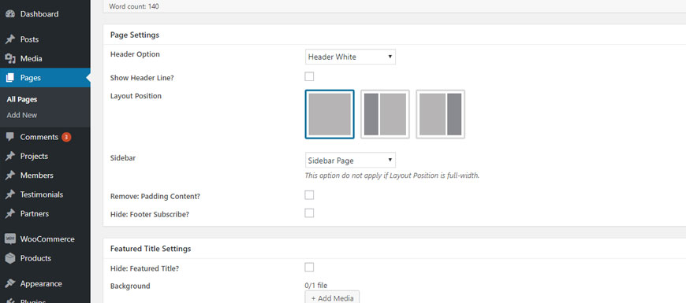
5. By imporing theme demo data, you import all pages, where you can see structures of elements, and how things are working, this is very useful.
Working With Custom Post Types
You can find different custom post types in theme, like gallery, portfolio, team memebers, testimonials, partners and others. Custom post types are located in wp admin panel main menu and all they are easy to customize. Simply goto custom post types and add or edit existing single items for each custom post type.
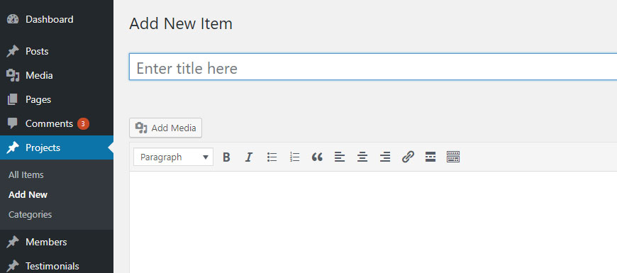Working With Contact From 7
1. Make sure that you installed Contact form 7 plugin. After installing this plugin you can create contact forms. Goto wp admin panel > Contact > Add New
2. Give a Name to your form and change Mail Info
3. Now you can create contact forms, by adding different form element
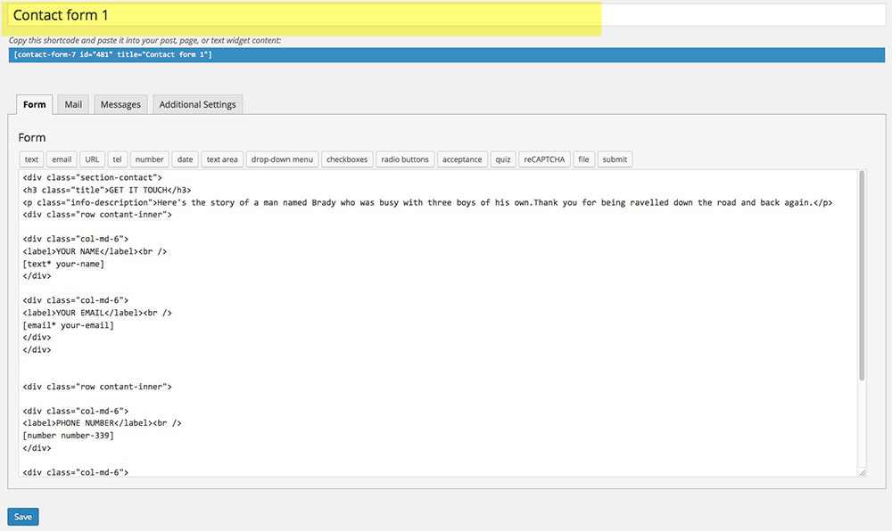4. Now you need to add created contact form to your page. Simply goto page editor - WPBakery editor, and in elements list you will find "Contact form 7 element". Add that element, choose your form from forms list and form will appear in your page.
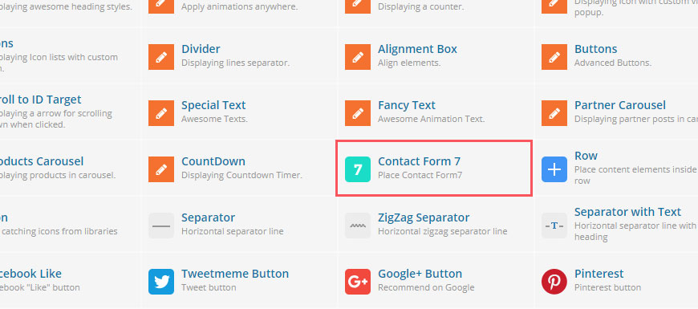More information abouyt contact form 7 you can find on plugin documentation https://contactform7.com/docs/
Theme Translation
1. You need to download and install poEdit program from here https://poedit.net/download
2. Then goto ftp > wp-conetent > themes > your theme folder > languages. There you will find .pot file, open it with poEdit
3. After edititng you need to set correct files name for your new files that will come after editing. More info about files naming you gan find here: https://poedit.net/download
4. Open file wp-config.php in your Wordpress root folder and add the line define('WPLANG', ''); remember replace '' by the language you want. More details can be found here: WordPress in your language
5. You can also translate theme using Logo Translate plugin: https://wordpress.org/plugins/loco-translate/
6. Theme is fully compatibele with WPML Multilingual plugin, that can be used for translation and multilingual: WPML.org
FAQs
This section is about frequently asked questions
How to update theme via ftp
1. Download latest version of theme ( full pack ). Unzip it and inside you will see theme zip file "plugins" folder and others.
2. Unzip theme zip file as well, then goto wp-content > themes in your ftp and replace theme old folder with new one, by replacing all files as well
3. Now you need to update all included plugins. Goto "plugins" folder in your theme pack, then unzip all zip files inside that folder, in result you will have plugins folders. Goto wp-content > plugins > and replace each folder of plugin with new folder, by replacing all files inside folder
How to create child theme
What is child theme ?
A child theme is a theme that inherits the functionality of another theme, called the parent theme. Child themes allow you to modify, or add to the functionality of that parent theme. A child theme is the best, safest, and easiest way to modify an existing theme, whether you want to make a few tiny changes or extensive changes. Instead of modifying the theme files directly, you can create a child theme and override within.
Why to use a Child Theme?
if you modify an existing theme and it is updated, your changes will be lost. With a child theme, you can update the parent theme (which might be important for security or functionality) and still keep your changes. It’s a great way to get started if you are just learning WordPress theme development.
How to create Create child ?
Follow documentation about child theme creation: Child Theme Dev
You can also use this plugin for easy child theme creation: One Click Child Theme
How to configure Mailchimp
1. Theme is compatible with "Mailchimp for wordpress" plugin. To make it working you need to place valid API key to wp admin panel > mailchimp for WordPress > API key form.
2. To get API key you need to have registered mailchimp account, login to your account, then goto https://admin.mailchimp.com/account/api and there you will be able to create your API key, copy it, paste to WordPress.
3. Goto wp admin panel > mailchimp for WordPress > form > settings > and make sure that you assigned correct mailing list with enabling checkbox in "Lists this form subscribes to" section.
4. Now you can place your subscribe form anywhere you want as WPBakery page builder element.
How to configure Recent Tweets widget
1. Goto wp admin panel > appearance > widgets > and you can see "recent tweets" widget, which you can place in any widget area. But you can see that there are some data from twitter API that you need to set to make it working.
2. Visit the Twitter Developers Site http://dev.twitter.com
3. Sign in with your Twitter account and goto "My applications"
4. Press "Create new application" button.
5. Give unique name to your application and fill other fields as well. This application will be used for personal purposes only
6. If entered values are valid you will be taken to your oAuth settings page. Then click the “Create my access token” button.
7. Now you will see all needed information simply copy-paste it to your WordPress recent tweets widget
8. And you need to add twitter channel for sure in recent tweets widget. For example if you want to add this channel "https://twitter.com/tutsplus", you need to sewt only username "tutsplus"
How to enable HTTPS on my website
Themes are tested and fully working on HTTPS protocole with SSL certificates. To enable it, you need to have it enabled and configured on your hosting. Then simply install this plugin and all will work: Really simple SSL
How to Enable WPBakery page builder for custom post types
By default WPBakery is disabled for custom post types, like portfolio, team members, testimonials and others, and you will classic editor. To enable WPBakery page buiilder for your custom post types simply go to WPBakery Page Builder > Role Manager and under the user role you want to set the post types for you click “Custom” from the dropdown then check all the post types you want to use the Visual Composer on. Do it for "adminiatrator" section and for "editor" section as well.
Working With Educator Plugin
This section is Educator Plugin ( Learning and Courses Management System )
Install Educator
1. You will see message to install plugin automatically, when installing theme.
2. In any case you always can install plugin manuallly. You will find plugin zip file in your full theme download zip pack > plugins folder. Goto wp admin panel > plugins > add new > and install educator pligin zip file manually.
How Educator Plugin works
Educator is a simple learning management system plugin for WordPress. It lets you sell and teach courses online.
1. A student finds a course and clicks “Register”. She/he fills in the course registration form, selects a payment method, and clicks “Continue”.
2. Verify the payment. If the payment method can be verified automatically (e.g., PayPal and Stripe), the payment is approved immediately in most cases. However, if the student decides to pay with a payment method, which should be verified manually (e.g., bank transfer, cash, and check), you’ll have to verify the payment manually.
The outcome of the successful payment verification is the course entry for the student. This entry has its Status set to In Progress.
3. Now, the student can start studying. She/he can read lessons and take quizzes within the chosen course. You can check the quizzes and grade them.
4. The student has to complete the course at some point. To indicate that the student has finished the course, you should edit his/her entry, set the Grade and change the Status to Completed.
How to verify payments manually
To verify a payment:
1. Go to the Educator » Payments page and edit the payment.
2. If the Payment Type is Membership, set the Status to Completed and check Setup membership for this student:
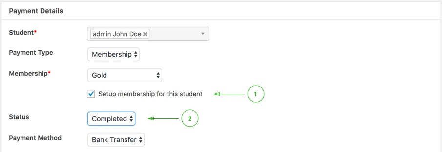3. If the Payment Type is Course, set the Status to Completed and check Create an entry for this student:
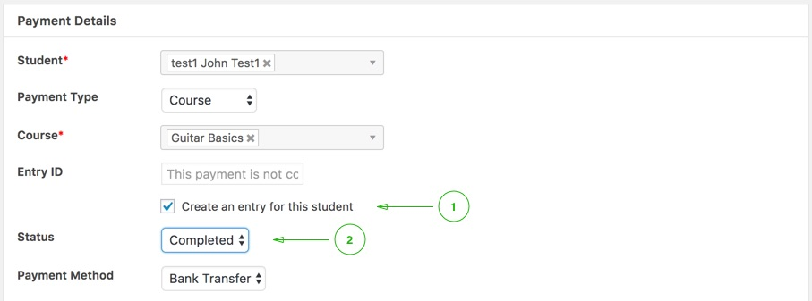4. Click Save Changes
Setup General Settings
Please go to Educator » Settings » General and fill in the following settings:
1. Location: The location where you sell your courses and/or memberships from, you can use this option when setting up the taxes.
2. Currency: The currency used to display the prices.
3. Currency Position: The position of the currency sign in the price display.
Setup Necessary Pages
In order for the Educator to work properly you need to create a number of pages:
1. Student’s Courses: The list of courses a user has taken or is taking at the moment.
2. Payment: The course registration form.
3. Memberships: The list of available memberships.
4. User’s Membership: The user’s membership management page.
5. User’s Payments: The user’s payments history page.
Please go to Pages » Add New and create the pages listed above. Each page must contain a corresponding shortcode:
1. Student’s Courses: [edr_student_courses]
2. Payment: [edr_student_courses]
3. Memberships: [edr_memberships]
4. User’s Membership: [edr_user_membership]
5. User’s Payments: [edr_user_payments]
Then, go to Educator » Settings » General and assign each page to a corresponding setting in the Pages section.
Setup Learning Settings
Please go to Educator » Settings » Learning and fill in the following settings:
1. Enable comments on lessons: Allow users to add/read comments on the single lesson page
2. Enable quizzes for: Display the quiz creation user interface on the edit pages for the selected post types
Setup Payments
Educator provides five basic payment gateways:
1. PayPal
2. Cash
3. Check
4. Bank Transfer
5. Stripe
Each gateway has two settings in common:
1. Enabled: Enable the gateway
2. Default: Make the gateway your default gateway (e.g., default gateway will be initially checked on the Payment page)
Setup Taxes
Please test your taxes configuration carefully.
Please go to Educator > Settings > Taxes and edit the following settings:
Enable Taxes
This setting enables taxes feature and tells educator to calculate taxes on purchases. The taxes have to be configured.
Prices Entered With Tax
Whether you enter prices inclusive or exclusive of tax.
Inclusive taxes apply to your selling location (set it on the Educator > Settings screen). For example, if your selling location is Canada, Alberta and you have a tax rate defined for it (e.g. Canada, Alberta 10% or Canada 10%), this tax rate will be included in the prices you enter. If you set the price to $11 for a course and you add a 10% tax rate for your selling location, then, $1 tax will be included in this price, such that the price break down that users see on the payment page should be $10 subtotal, $1 tax, and $11 total, if the billing country and state selected by the student match your selling location’s country and state, otherwise, the total price will be calculated excluding tax (e.g., if a student selects his/her billing address’ state or country different to your selling location).
Tax Classes
In different countries the tax rates are applied differently, they may be split into a number of categories (or tax classes). Each tax class may be applied to a different category of products and services. Tax classes can have different tax rates. Based on your country, you can use just the default tax class or create multiple tax classes and setup different your tax rates per class.
Once you setup your tax classes and rates you need to assign these tax classes to your courses and/or memberships. Edit a course or a membership and select the relevant tax class from the Tax Class select box.
Tax Class Rates
You can add multiple rates per tax class. Every rate has the following attributes:
1. Country: The rate will be applied based on the customer’s billing country.
2. State: The rate will be applied based on the customer’s billing country and billing state.
3. Name: The tax rate name (for example, VAT (19%)).
4. Rate (%): The tax rate, given in percentage (from 0 to 100). Examples: 10, 20, 19.5, etc.
5. Priority: Define how the tax rates are to be grouped. Only the first matching tax rate will be selected per priority group. Priority should be entered as a positive integer (0 or greater). The rates are applied in order of their priority (in ascending order).
Setup Memberships
This page has only one setting at the time of this writing:
Send an email notification to a user X days before his/her membership expires. Please set this setting to the number of days (e.g., 7)
Setup Email Settings
Currently, there are 4 types of email notifications in Educator:
1. Student registered: A student receives this email when he/she registers for a course
2. Quiz grade: A student receives this email when he/she receives a grade for a quiz
3. Membership registration: A student receives this email when he/she registers for a membership
4. Membership renew: A student receives this email when his/her membership expires soon
Each email template has a number of placeholders available (e.g., {student_name}, {course_title}, etc). These placeholders are replaced with the real values when an email is being sent.
Important note: If payment can not be identified automatically ( for example paypal payment can be identified automatically after payment), then email for course registration is sent only after you set payment status to "completed" and enable checkbox for "create entry for this user" via wp admin panel > educator > payments >edit pending payment.
For membership payments email is sending only after you set payment status to "completed" and enable checkbox "Setup membership for this student". If you will not enable that checkbox and not set payment status to "completed" then user will not be assigned to course / membership and email will not be sent.
Add Educator’s Pages to the Menu
It is quite easy to add the pages like Payment or My Courses to the menu, but it is not straight forward how to add the courses archive page.
Adding the courses archive page to the menu:
1. Go to Apparance » Customize » Menus
2. Select your menu and click Add Items
3. Open the Courses section and click Courses Post Type Archive
Protect Private Uploads
It is important to prevent private uploads from being served to anyone on the Internet. Learn how to protect the Educator’s private uploads directory.
Examples of private uploads:
A user uploads a file to answer a quiz question of type “File Upload”.
By default, Educator stores private uploads in the following directory: path/to/your/website/wp-content/uploads/edr. This directory can be changed by the use of the edr_private_uploads_dir filter hook.
The way to protect the private uploads directory depends on the web server software your website is being served by.
By default, Educator attempts to protect the private uploads directory using an .htaccess file. However, this kind of protection works only if your website is served by the Apache web server. The .htaccess file contents look like this:
Options -Indexes deny from all
The nginx users have to setup a proper Location context to protect this directory. You could use the following example to setup your own Location context to protect your private uploads:
location ~ ^/wp-content/uploads/edr/ {
deny all;
return 403;
}
You have to add the Location context in the right place inside the server block of your website.
The other way to protect this directory is to move it outside of your web server’s document root. You can use the edr_private_uploads_dir filter hook to accomplish this.
Independent of the web server you are using, you should make sure that your private upload directory is protected and you cannot access any file from that directory by using a URL like: http://your-website.com/wp-content/uploads/edr/path/to/a/file (e.g., http://your-website.com/wp-content/uploads/edr/quiz/5c/e2/5ce2807497444addd248e8cd9b17712302119c90.txt).
For Developers: Add a custom currency
You can use the edr_currencies filter to add a custom currency. You can use the code example below to add your currency:
function myprefix_add_currency( $currencies ) {
$currencies['AUD'] = 'Australian Dollar';
return $currencies;
}
add_filter( 'edr_currency', 'myprefix_add_currency' );
The child theme’s functions.php can be a good place to add this piece code.
Notes:
1. Please use the standard currency code.
2. Please make sure that the payment gateways you’re going to use support your currency.